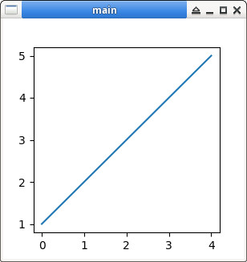

參考資訊：
https://tkdocs.com/shipman/
https://www.pythontutorial.net/tkinter/tkinter-window/
https://www.geeksforgeeks.org/how-to-embed-matplotlib-charts-in-tkinter-gui/
main.py
import tkinter as tk
from matplotlib.figure import Figure
from matplotlib.backends.backend_tkagg import FigureCanvasTkAgg
root = tk.Tk()
root.title('main')
root.geometry('300x300')
v = [1, 2, 3, 4, 5]
fig = Figure()
plot1 = fig.add_subplot()
plot1.plot(v)
canvas = FigureCanvasTkAgg(fig, master = root)
canvas.draw()
canvas.get_tk_widget().pack()
root.mainloop()
執行
$ python3 main.py
